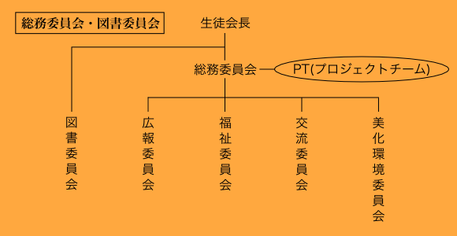

各役員の仕事や仕事の成果を全ての灘校生に伝える「生徒会広報」を発行するが仕事です。委員長が懸命に努力して作る広報ですので、配られた折には是非読んでください。
募金活動や、友生養護学校との交流などのボランティア活動をする委員会です。これらの活動があるときには、ボランティアスタッフの募集があります。
「灘校」を外に向けて発信し他校との交流を行ったり、海外の学校との交流を担当する委員会です。
美化環境委員会は学校を美化する、生徒の環境意識を高めることを目的とした委員会です。そのために、紙ごみ回収から緑の募金まで、仕事はいろいろありますが、できるだけ多くの生徒を巻き込めるような活動を展開しています。
毎週木曜日に図書館に集まり、月刊広報紙『読書尚友』の発行や、新しい本の選定などをする委員会です。
PTとはプロジェクトチーム(Project Team)の頭文字を取って命名した、総務委員会内の活動形態の一つです。「やる気」のある総務委員が集まり、立ち上げ、やりたい事を熱意をもって成し遂げる、それがPTです。簡単に立ち上げ・解体することができます。
PTの具体例
- JUDO交流PT…JUDO交流2010を企画・運営した
- 開成PT…灘×開成討論会2010を企画・開催した
「生徒会とかよく分らんけど、今立ち上がってるこのPTがやってるコトは興味あるんだよなー」とか、単純に「新しいこと何かやりたい！」という生徒がいれば、今年の生徒会にはそれを実現できる環境があるので、是非僕に一声かけてください！学年は関係ないです。（実際、後輩からの面白いアイデアには幾度となく唸らされてきました。）
by 生徒会長